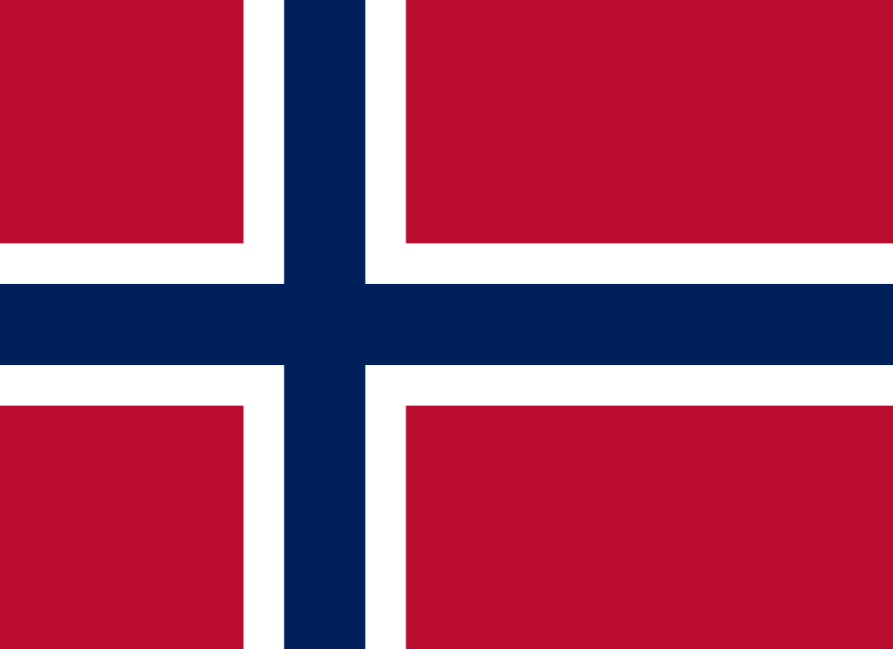
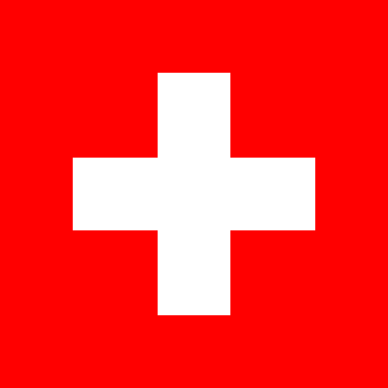
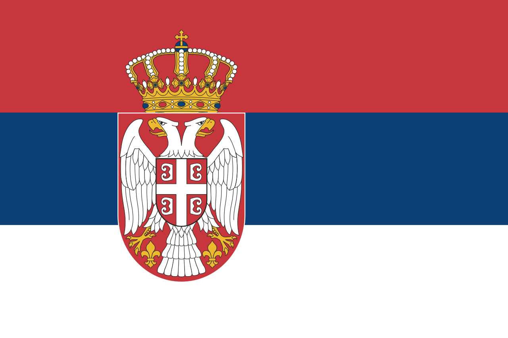

Európai-Unió
Ausztria

Belgium
Bulgária

Ciprus

Csehország

Dánia

Észtország

AUSZTRIA
Főváros
Bécs
Lakosság
kb. 8 879 000 fő
Terület
83370 km²
Államforma
Szövetségi köztársaság
Pénznem
EUR
Gazdaság
Ausztria gazdaságában jelentős szerepe van az alapanyaggyártó ágazatoknak. Ezek részben hazai (kősó, vasérc, magnezit), részben külföldről behozott ásványkincsekre épülnek. A feldolgozásukhoz szükséges energiát a vízerőművek biztosítják. A kohászati központok, melyekhez fejlett gépipar kapcsolódik, a Mura völgyében és a Duna mentén fekszenek. A legsokoldalúbb iparral a dunai kikötőváros, Linz és a közeli Steyr rendelkezik (5.4.). A fa-, papír- és bútoripar központja az ország második legnépesebb városa, Graz.
Bécs
A főváros, Bécs (Wien) igazi világváros, fontos kulturális központ. A régmúltat idéző belvárosában számos múzeum, képzőművészeti kiállítás és komolyzenei hangverseny vonzza a kultúrát szerető közönséget. Bécsben található a Nemzetközi Atomenergia Ügynökség (IAEA) és a Kőolaj-exportáló Országok Szervezetének (OPEC) központja.
Mezőgazdaság
A mezőgazdaság vezető ágazata az állattenyésztés. A magasan fekvő területeken a havasi pásztorkodás a jellemző gazdálkodási forma, az alacsonyabb tengerszint feletti magasságokban pedig hagyományos istállózó állattartás folyik.
Idegenforgalom
Az idegenforgalmi bevétele jelentős. Minden évszaknak megvan a vonzereje: télen a síelni vágyókat, nyáron a túrázókat és az extrém sportok kedvelőit várják. A rendezett, tiszta környezet rendkívül fejlett infrastruktúrával párosul.
Ausztriai hírességek
Wolfgang Amadeus Mozart, Franz Schubert, Johann Strauss, Arnold Schwarzenegger, Arnold Palmer
Tipikus ausztriai ételek
Wiener Schnitzel, Gulasch, Sacher Torte, Apfelstrudel
CSEHORSZÁG
Főváros
Prága
Lakosság
kb. 10 600 000 fő
Terület
78866 km²
Államforma
Szövetségi köztársaság
Pénznem
CZK
Ipar
Ásványkincseire sokoldalú feldolgozóipar települt. A kaolint Karlovy Vary porcelán- és kerámiaipara használja fel, a grafitból České Budějoviceben ceruzát készítenek. Az ország nehézipari központja, „acélszíve” Ostrava.
Gépgyártás
A gépgyártás fontosabb városai: Mladá Boleslav, ahol a Škoda személygépkocsikat gyártják, valamint a Morva-medencében fekvő, mezőgazdasági gépgyártásáról nevezetes Brno.
Mezőgazdaság
Csehország behozatalra szorul a legtöbb gabonaféléből és takarmánynövényből. A mezőgazdasági termelés a medencékre koncentrálódik, ahol a búza és a kukorica mellett a csehek „nemzeti italának”, a sörnek az alapanyagait, a sörárpát és a komlót termesztik. A sörgyártás egyik központja Plzeň.
Híres cseh emberek
Martina Navratilova, Miloš Forman, Madeleine K. Albright, Sissy Spacek
Cseh nemzeti ételek
Guláš, Pečená kachna, Kuře na paprice, Vepřo knedlo zelo
DÁNIA
Főváros
Koppenhága
Lakosság
kb. 5 882 000 fő
Terület
42,933 km²
Államforma
Monarchia
Pénznem
Dán korona
Dánia területe
Dánia a Jylland-félszigetre és a tőle keletre fekvő csaknem 500 szigetre települt. A terület egykor összefüggött a Skandináv-félszigettel, attól a legutóbbi jégkorszak után megemelkedő tenger választotta el. A hullámos felszínű síkság átlagos tengerszint feletti magassága csupán 30 méter
Népsűrűség
Az északi területekre jellemző alacsony népsűrűség ellenére, Dánia népsűrűsége nagy, legealábbis az európai uniós átlagnál valamelyest magasabb. A legnépesebb terület a Közép-Dánia, ahol a népsűrűség 300 fő/km² fölött van.
Tipikus skandináv jellegzetességek:
Színes házak
Észak-Európában alapvetően fából építkeznek. A fát, hogy az minél ellenállóbb legyen, speciális festékkel kezelik. A pirosra, sárgára vagy kékre festett házak idilli képet nyújtanak
Időjárás, ruházkodás
Nincs rossz idő, csak rossz öltözet - tartja a norvég mondás. A megfelelő ruházat megvéd minket a szeszélyes időjárástól. Nem csoda hát, hogy a ruhaválasztásnál északon a célszerűség az elsődleges szempont.
Békés természet
Az „északi ember” nyugodt, kiegyensúlyozott. Nem siet, ha gyalogol, de akkor sem, ha autót vezet. Alapvetően távolságtartó, de ha megszólítják, nagyon szívesen segít.
Mezőgazdaság
Az ország területének igen magas arányát teszik ki a szántóföldek (kb. 60%). A dán mezőgazdaság és az arra települő élelmiszeripar nemzetközi viszonylatban is számottevő. A korszerű, gépesített gazdaságok családi kézben vannak. A nagyobb kiadással járó tevékenységeket, például a vetőmagok beszerzését, a gépek vásárlását, a raktárak bérlését és az értékesítést viszont a gazdák szövetkezetekbe tömörülve közösen intézik. Az összefogás révén ugyanis csökkenteni tudják a költségeiket.
Híres dán emberek
Hans Christian Andersen, Karen Blixen, Niels Bohr, Søren Kierkegaard
Dán nemzeti ételek
Smørrebrød, Røget laks, Stegt flæsk, Stegt flæsk med persillesovs
BULGÁRIA
Főváros
Sofia
Lakosság
kb. 7 100 000 fő
Terület
110 879 km²
Államforma
Parlamentarizmus
Pénznem
Leva
Soknemzetiségű
A Balkán hosszú évszázadokon keresztül a Török Birodalom fennhatósága alá tartozott. Ezért csak későn alakultak ki a balkáni népek független nemzetállamai. Nincs még egy olyan területe Európának, ahol olyan nagymértékű a különböző nemzetiségek keveredése, mint a Balkán-félszigeten.
A Balkán
A Balkán-félsziget lakóinak többsége a szláv népcsoportba tartozik, de még ha nyelvük hasonló is, vallásuk sokszor eltérő. A nyugati és a keleti kereszténység hívei mellett több országban is találkozhatunk az iszlám követőivel. A nemzetiségek keveredése sok problémát okozott a térségben, az 1990-es évek elején a délszláv háború kirobbanásának is az egyik fontos tényezője volt.
A Balkán térségéből nagy a népesség elvándorlása, sokan indultak el Jugoszláviából Nyugat-Európába munkát keresni, és azóta is nagyon sokan próbálnak vendégmunkásként boldogulni.
Európa végén
Az Európa gazdasági súlypontjától távol eső Balkán-félszigeten vannak a kontinens legszegényebb országai. Gazdaságukat a szocializmus évtizedei és a háborús konfliktusok is szétzilálták. A külföldi tőke csak óvatosan jelenik meg a térségben.
Nagy lehetőség rejlik az idegenforgalomban, hiszen az európai utazók többségének ismeretlen területen sajátos kultúrát, érdekes műemlékeket, sokszor érintetlen tájakat és csodás tengerpartokat kínálnak az országok. A sikerhez azonban elengedhetetlen az infrastruktúra fejlesztése.
Főváros
Brüsszel
Lakosság
kb. 11 000 000 fő
Terület
30 528 km²
Államforma
Parlamentarizmus
Pénznem
Euro
Benelux
A Benelux államokra az európai integráció előfutáraként tekintenek. A második világháború után ugyanis Belgium, Hollandia és Luxemburg megszüntette egymás között a vámokat, emellett szabaddá tette az áruk, a munkaerő és a tőke mozgását. Az országok az Európai Gazdasági Közösség (EGK) alapítói között voltak, ma tagjai az euróövezetnek és a schengeni övezetnek egyaránt. Több európai uniós intézmény székhelye található Brüsszelben.
Földrajzi helyzet
A Benelux államok a három legnagyobb európai gazdaság, Németország, az Egyesült Királyság és Franciaország közé ékelődnek. A nagy népességszámú és jelentős gazdasági erőt képviselő szomszédok komoly kereskedelmi lehetőséget jelentenek Belgium, Hollandia és Luxemburg számára. Ugyancsak fontos az Atlanti-óceánra nyitott tengerpart és az óceánba torkolló folyók szerepe. Antwerpen évszázadok óta összeköttetésül szolgálnak a világgazdaság távoli szereplőivel.
Népesség
Belgium népsűrűsége is magas, mintegy háromszorosa hazánkénak. Legnépesebb városai: a főváros Brüsszel és Antwerpen. Az ország északi részén (Flandriában) fl amandok, déli részén (Vallóniában) pedig vallonok laknak. A fl amand a holland, a vallon pedig a francia nyelvhez hasonlít. A nyelvi határ mentén fekvő Brüsszel kétnyelvű város. Belgium lakosságának is körülbelül a negyede érkezett más országból. Luxemburg a francia és német nyelvterület hat
Brüsszel lakosságának számottevő részét teszik ki a diplomaták és a munkájukat segítő apparátus. A hivatali negyedek kisebb városokként működnek. A szolgáltató szektorban (pl. az étkeztetés, a takarítás, a biztonsági szolgálat vagy a szállítás terén) jellemzően vendégmunkások dolgoznak.
Kétarcú táj
Belgium északi-északnyugati része síkvidék. A terület délkelet felé fokozatosan emelkedik: a dombvidéket a rögös szerkezetű Ardennek követi.
Főszerepben az ipari növények
Belgiumban hangsúlyos az ipari növények szerepe. A len az északi országrész, Flandria nagy hagyományokra visszatekintő textiliparának a nyersanyaga. A sörárpa és a komló a világhírű belga sör alapanyagául szolgál.
Vallónia, „a vas és acél völgye”
Az Ardennek ásványkincseire épült Vallónia hagyományos iparvidéke. A feketekőszén- és vasércbányák mára már kimerültek, a szükségszerű szerkezetváltás lezajlott. A modern ipari ágazatok mellett az import nyersanyagot feldolgozó nyersvas- és acélgyártás azonban napjainkban is számottevő.
Jelentős városok
Brüsszel - főváros, EU intézmények, NATO központ
Antwerpen - kikötőváros, vegyipar, gyémántcsiszolás
CIPRUS
Főváros
Nicosia
Lakosság
kb. 1 170 000 fő
Terület
9 251 km2
Államforma
Parlamentarizmus
Pénznem
Euro
ÉSZTORSZÁG
Főváros
Tallinn
Lakosság
kb. 1 316 000 fő
Terület
45 227 km2
Államforma
Parlamentarizmus
Pénznem
Euro
Híres észt emberek
Andres Ehin, Eesti Laul
Észt gasztronómiai jellegzetességek
A legáltalánosabb ételek Észtországban a rozskenyér, a disznóhús, valamint a burgonya és a tejtermékek. Az észt étkezési szokások nagy mértékben kötődnek az évszakok változásaihoz. Alkoholfogyasztás terén az észt emberek a sört, illetve a vodkát részesítik előnyben.
Finnország

Franciaország
Görögország

Hollandia

Horvátország

Írország
Lengyelország

HORVÁTORSZÁG
Főváros
Zágráb
Lakosság
kb. 4 200 000 fő
Terület
56 542 km²
Államforma
Köztársaság
Pénznem
Euró
Turizmus
Az Adriai-tenger partjának jelentős része Horvátországhoz tartozik. A tengerpart rendkívül tagolt. A tiszta, átlátszó víz, a remek búvárkodási és vitorlázási lehetőségek, a kiépített mediterrán üdülőtelepülések és a jó minőségű szolgáltatások igen vonzóvá teszik. A turizmus sokat lendített az ország gazdaságán: az idegenforgalomból származó bevételek GDP-hez viszonyított aránya az Európai Unión belül itt a legmagasabb. Az ország legfontosabb tengerparti régiói az Isztriaifélsziget (melynek nagy kikötővárosa Rijeka) és Dalmácia (főként Zadar, Split és Dubrovnik környéke).
A tengerpart könnyebb elérhetősége érdekében a horvátok jelentős összegeket költöttek az ország autópálya-hálózatának bővítésére.
Ipar
A horvát ipar elsődleges központja a főváros, Zágráb (Zagreb) és környéke. A Száva partján fekvő nagy múltú város a horvát kultúra és tudomány „fellegvára”. Iparában a képzett munkaerőt igénylő ágazatok kapnak nagy szerepet. Az ország legfontosabb kikötővárosa Rijeka. A várostól nem messze indul az Adria-kőolajvezeték, amely a Közel-Keletről származó kőolajat szállítja tovább Magyarországra.
Híres horvát emberek
Ivan Mestrovic szobrász, Oscar Nemon színész, Luka Modric aranylabdás focista, Nikola Tesla feltaláló és villamosmérnök.
Horvát nemzeti ételek
Burek sa sirom, Kotlovina, Čobana, Fritule
LENGYELORSZÁG
Főváros
Varsó
Lakosság
kb. 38 000 000 fő
Terület
312 679 km²
Államforma
Köztársaság
Pénznem
Zloty
Mezőgazdaság
Kelet-Közép-Európa legnagyobb területű és legnépesebb országa. Döntő része síkvidék, ezért a mezőgazdaság szerepe itt nagyobb, mint a másik két országban. Elsősorban takarmánynövényeket termesztenek, amelyeket a szarvasmarha-tenyésztés használ fel. Emellett a földeken sok rozs, cukorrépa és búza terem. A kis parcellákon folytatott gazdálkodás nem túl hatékony, a termésátlagok alacsonyabbak a nyugat-európaiaknál.
Ipar
A lengyel ipar alapjául a Lengyel-középhegység és a Szudéták ásványkincsei szolgáltak. A kőszén, az ezüstés az ólomérc bányászata napjainkban is jelentős. FelsőSzilézia mellett fontos kohászati központ Krakkó városrésze, Nowa Huta is. A Balti-tenger kikötővárosa a Visztula torkolatánál fekvő Gdansk, illetve az Oderá - nál fekvő Szczecin.
Híres lenygel emberek
Robert Lewandowski, Maria Skłodowska-Curie, Ludwik Zamehhoff, Mikołaj Kopernikusz, Fryderyk Chopin
Lenygel nemzeti ételek
Pierogi, Placki ziemniaczane, Rosół, Pączki, Gołąbki
FINNORSZÁG
Főváros
Helsinki
Lakosság
kb. 5 500 000 fő
Terület
338 145 km²
Államforma
Köztársaság
Pénznem
Euro
A Balti-ősföld
A Balti-ősföld kontinensünk ősi magja. A területén egykor magasodó hegységek mára teljesen lepusztultak, emléküket a néhol kibukkanó kristályos kőzetek őrzik. Felszínét a jégtakaró hullámos síksággá formálta. A puhább kőzetsávokba mélyedéseket vájt, melyeket napjainkban (pl. a Finn-tóvidéken) tavak töltenek ki. A keményebb, ezért ellenállóbb kőzetsávok helyén pedig hullámos felszínű sziklahátak, úgynevezett vásottsziklák maradtak vissza
A tipikus „észak”
Hosszú nappalok és hosszú éjszakák. Az északi sarkkörön, így például a finnországi Rovaniemiben, ahol a Mikulás él, a nyári napfordulón nem megy le, a téli napfordulón pedig nem kel fel a Nap. Minél északabbra megyünk, annál hosszabbak lesznek ezek a különleges időszakok.
Finnország népességének mintegy 5%-át a svéd kisebbség teszi ki. Tagjai fontos kapocsként szolgálnak a skandináv népek felé.
Északon, az országhatárokon átnyúló Lappföldön mintegy százezer, rénszarvastenyésztéssel foglalkozó, nomád életmódot folytató számi él.
Tipikus skandináv jellegzetességek:
Színes házak
Észak-Európában alapvetően fából építkeznek. A fát, hogy az minél ellenállóbb legyen, speciális festékkel kezelik. A pirosra, sárgára vagy kékre festett házak idilli képet nyújtanak
Időjárás, ruházkodás
Nincs rossz idő, csak rossz öltözet - tartja a norvég mondás. A megfelelő ruházat megvéd minket a szeszélyes időjárástól. Nem csoda hát, hogy a ruhaválasztásnál északon a célszerűség az elsődleges szempont.
Békés természet
Az „északi ember” nyugodt, kiegyensúlyozott. Nem siet, ha gyalogol, de akkor sem, ha autót vezet. Alapvetően távolságtartó, de ha megszólítják, nagyon szívesen segít.
Híres finn emberek
Markku Aro, Jari Litmanen, Jari Kurri, Mika Häkkinen, Kimi Räikkönen
Finn nemzeti ételek
Runabergintorttu, Hernekeitto, Laskiaispulla, Grillimakkara, Karjalanpiirakka
GÖRÖGORSZÁG
Főváros
Athén
Lakosság
kb. 10 766 000 fő
Terület
131 957 km²
Államforma
Parlamentarizmus
Pénznem
Euro
Gazdaság
Görögország magas államadóssággal és munkanélküliséggel párosuló közepes méretű gazdasággal rendelkezik. Gazdasági életének centruma Athén. Az ország GDP-jének közel felét a főváros régiója adja. Némi ellensúlyt csupán az északi kikötőváros, Thesszaloniki képez.
Mezőgazdaság
Görögországban európai mércével mérve magas a mezőgazdaságban dolgozók aránya. Az ipar gerincét a mezőgazdasági termények feldolgozását végző élelmiszeripar és a könnyűipar adja. Az ország a világ egyik vezető mazsolatermesztője. Az idegenforgalom mellett fontos bevételi forrást jelent a tengeri bérfuvarozás is. A görög kereskedelmihajó-fl otta az egyik legnagyobb az Európai Unióban. Sok nemzetközi nagyvállalat bérel görög hajót azért, hogy áruit a megrendelőkhöz szállíttassa.
Turizmus
A mediterrán térség Európa legnépszerűbb úti céljai közé tartozik. Nyáron a kiszámítható időjárás, a kellemesen hűs tenger kínál önfeledt kikapcsolódási lehetőséget. A sajátságos hangulatú, kulturális emlékekben rendkívül gazdag városok is rengeteg látogatót vonzanak. Az idegenforgalom a dél-európai országok egyik húzóágazata
A Dél-Európába látogatók száma folyamatosan nő, ez pedig egyre nagyobb terhet jelent a helyi lakosságnak és a környezetnek egyaránt.
A turizmus révén foglalkoztatottak aránya: 25,9%
A turizmus hozzájárulása a GDP-hez: 20,6%
Híres történelmi görög emberek
Homérosz, Szophoklész, Periklész, Püthagorasz, Hippokratész
Görög nemzeti ételek
Spanakopita, Moussaka, Tzatziki, Souvlaki, Baklava, Gyros
Franciaország
Főváros
Párizs
Lakosság
kb. 67 000 000 fő
Terület
643 801 km²
Államforma
Parlamentarizmus
Pénznem
Euro
A La Manche-tól a Côte d'Azurig
Franciaország évszázadok óta Európa egyik vezető gazdasági és politikai nagyhatalma. Napjainkban a világ tíz legnagyobb gazdaságának egyike. Franciaország a gyarmatosítás korában kiterjedt birodalmat épített ki. A gyarmatok többsége a 20. század második felében függetlenedett, de néhány terület továbbra is a francia állam szerves részét képezi. Ezek az úgynevezett tengerentúli megyék. A Franciaországtól többezer kilométerre fekvő területek az Európai Unió részei, hivatalos fi zetőeszközük az euró.
Sokszínű népesség
Az elmúlt évtizedekben a tengerentúli megyékből és az egykori gyarmatokról, különösen Afrikából sok bevándorló érkezett Franciaországba. Becslések szerint az ország népességének mintegy 10%-a Franciaországon kívül született. A folyamat társadalmi feszültséget okoz. A bevándorlók aránya Párizsban és a déli területeken ennél jóval nagyobb.
Mezőgazdasági nagyhatalom
Franciaország az Európai Unió mezőgazdasági nagyhatalma. A aktív keresőknek ugyan csak kevesebb, mint 3%-a dolgozik a mezőgazdaságban, Franciaország mégis az első helyen áll az EU-ban a mezőgazdasági termények, termékek kivitelében. A mezőgazdasági termelés jellemzően korszerű technológiát alkalmazó közép- és nagybirtokokon folyik. Ezek sok esetben a feldolgozást is maguk végzik, így például konzervgyárat működtetnek. Mellettük a kisbirtokok a dán típusú szövetkezetekhez hasonló összefogás révén tudnak érvényesülni. A francia mezőgazdaság erősen specializálódott, az éghajlati és domborzati viszonyokhoz nagymértékben alkalmazkodott.
Mezőgazdasági területek
A hűvös, csapadékos északnyugati országrészben az állattenyésztésé a főszerep. A szarvasmarha- és a juhtartásra épült tejipar elsősorban vajat és sajtot állít elő. Franciaországban több száz különböző sajtfélét készítenek. Mivel a szőlő ebben az országrészben nem terem meg, a bor alapanyagául itt az alma szolgál. Az almabor (franciául cidre) Európa-szerte kedvelt ital.
A középső, illetve délnyugati területeken, a szántóföldeken búzát, kukoricát és napraforgót termesztenek. A napsütötte folyóvölgyekben és medencékben szőlő díszlik. A francia borok a világ legjobbjai közé tartoznak, de igencsak kedveltek a szőlőből készült borszármazékok (a pezsgő, a likőr és a konyak) is. A legfontosabb borvidék Champagne, Burgundia és Bordeaux környéke.
A mediterrán délen a szőlő mellett az olajfa és a citrusfélék, valamint a parfümgyártás alapanyagául szolgáló, illóolajban gazdag növények díszlenek. A magashegységekben a havasi pásztorkodás jellemző.
Ipar
A francia ipari termelés sokáig Párizsban és környékén (a régió francia nevén Île-de-France-ban) összpontosult. Az utóbbi évtizedekben azonban sok gyár települt át az ország különböző nagyvárosaiba, így a termelés többközpontú lett. A széttelepülésre jó példa a gépkocsigyártás. A párizsi központok mellett ma már számos olyan városban is működik autóalkatrész-gyártó vagy -összeszerelő üzem, ahol korábban nem volt jellemző a gépgyártás.
Többközpontúvá vált a repülőgépgyártás is. Toulouse, Bordeaux és Marseille a legfontosabb telephelyei. Utóbbi az ország legnagyobb áruforgalmú kikötővárosa
Franciaország egyik legfontosabb iparvárosa Lyon. A modern ipari ágazatok mellett számos, interaktív játékok készítésével foglalkozó vállalkozásnak is otthont ad a város. A kutatás-fejlesztés központja - többek között - a Párizsi-medence és a Francia Riviéra (Cote d' Azur). Franciaországban nagy hagyománya van a divatcikkek, kozmetikumok gyártásának.
Vendéglátás
Franciaország a turisták kedvelt célpontja. Párizs romantikája, a Loire menti kastélyok szépsége, Bretagne vadregényes tájai, a Riviéra derűje, az Alpok fenséges jégvilága, valamint a francia konyha remekei sokakat vonzanak.
Francia nemzeti ételek
Hagymaleves (Soupe à L'oignon), Francia lecsó (Ratatouille), Cassoulet, Coq au Vin Jaune, rengeteg sajtféle, Croissant, Bagett, francia bundás kenyér, Macaron
Italok: Francia borok, Champagne, Cognac, Armagnac, Calvados,
Híres francia emberek
Napóleon, XIV. Lajos, Jean Rousseau, Moliére, Voltaire, Béranger, Maupassant, René Descartes, Alain Delon, Gérard Depardieu, Jean Reno, Pierre Curie
HOLLANDIA
Főváros
Amszterdam
Lakosság
kb. 17 000 000 fő
Terület
41 526 km2
Államforma
Alkotmányos királyság
Pénznem
Euró
Benelux
A Benelux államokra az európai integráció előfutáraként tekintenek. A második világháború után ugyanis Belgium, Hollandia és Luxemburg megszüntette egymás között a vámokat, emellett szabaddá tette az áruk, a munkaerő és a tőke mozgását. Az országok az Európai Gazdasági Közösség (EGK) alapítói között voltak, ma tagjai az euróövezetnek és a schengeni övezetnek egyaránt.
Földrajzi helyzet
A Benelux államok a három legnagyobb európai gazdaság, Németország, az Egyesült Királyság és Franciaország közé ékelődnek. A nagy népességszámú és jelentős gazdasági erőt képviselő szomszédok komoly kereskedelmi lehetőséget jelentenek Belgium, Hollandia és Luxemburg számára. Ugyancsak fontos az Atlanti-óceánra nyitott tengerpart és az óceánba torkolló folyók szerepe. A nagy kikötővárosok, Amszterdam, Rotterdam évszázadok óta összeköttetésül szolgálnak a világgazdaság távoli szereplőivel.
Népesség
Hollandia Európa egyik legsűrűbben lakott országa. Népsűrűsége körülbelül négyszerese hazánkénak. Legnépesebb városai: a főváros Amszterdam. Rotterdam, valamit a királyi székhely, Hága. Az ország népességének etnikai összetétele igen változatos. Negyede Hollandián kívül született, Európából, Törökországból, illetve az egykori holland gyarmatokról (különösen Indonéziából és Suriname-ból) származik.
A polderek
Hollandia területének mintegy negyede mélyföld. Az ország lakói gátakat építettek, a gátak mögül pedig szélmalmok segítségével kiszivattyúzták a vizet. A védetté vált területet ezt követően feltöltötték, majd fokozatosan művelés alá vonták. Ez a folyamat a polderesítés. Nem véletlen a mondás, mely szerint „a tengert isten, a partot a hollandok teremtették”.
Mezőgazdaság
Hollandiában nagyszámú tejelő szarvasmarhát tenyésztenek. Az erre épülő tejipar termékei (pl. a friss tej, a sűrített tej, a tejpor, a vaj és a sajtok) világszerte ismertek. A növénytermesztés sajátos ágazata a kertgazdálkodás. A nagyvárosok peremén hatalmas, földgázzal fűtött üvegházak találhatók. Ezekben egész évben zöldségféléket, illetve vágott virágot, virághagymát termesztenek. Ezek Hollandia fontos exporttermékei.
A patkó alakú városhalmaz
Hollandia nyersanyagokban szegény ország, így azok többségét külföldről szerzi be. Az atlanti partvidék kikötői évszázadok óta hatalmas forgalmat bonyolítanak le. A beérkező nyersanyagot vagy a két nagyvárosban, Amszterdamban és Rotterdamban, vagy a csatornákon, illetve utakon könnyen elérhető közép-holland városokban dolgozzák fel. Ezek a települések mára összefüggő városhalmazt alkotnak. A városhalmazt - alakjára utalva - Randstadnak (Patkóvárosnak) nevezik.
Jelentős városok
Amszterdam - főváros, pénzügyi, kereskedelmi központ, gyémántcsiszolás
Rotterdam - az Europoort Európa legnagyobb áruforgalmú kikötője, logisztikai csomópont
Hága - királyi székhely, a Nemzetközi Bíróság székhelye
Eindhoven - a kutatás-fejlesztés központja
Híres holland emberek
Rembrandt Harmenszoon van Rijn festő, Willem van Oranje holland király, a német-angol háborúban a hollandok vezetője, Willem Drees - holland politikus, 1945-1958 között miniszterelnök, Willem Alexander - holland király
Holland nemzeti ételek
Holland krumplipüré (Stamppot), Erwtensoep, Pannenkoeken, Bami Goreng, Saté
ÍRORSZÁG
Főváros
Dublin
Lakosság
kb. 4 761 000 fő
Terület
70 273 km2
Államforma
Parlamentarizmus
Pénznem
Euro
Híres ír emberek
William Butler Yeats író, Samuel Beckett író, George Bernard Shaw író, Jonathan Swift író, Arthur Guinness
Ír nemzeti ételek és italok
Colcannon, Irish stew, Irish coffee, Irish soda bread, Boxty, ír whiskey
Lettország

Litvánia

Luxemburg

Magyarország
Málta

Németország

Olaszország

NÉMETORSZÁG
Főváros
Berlin
Lakosság
kb. 83 166 300 fő
Terület
357 021 km²
Államforma
Köztársaság
Pénznem
Euro
Európai szerepkör
Németország Európa legnépesebb országa, az Európai Unió egyik legfontosabb tagállama, Európa vezető gazdasági hatalma, a világ negyedik legnagyobb gazdasága, a világ egyik legnagyobb exportőre.
Történelmi múlt
A második világháború után a vesztes Németország két részre szakadt. Az amerikai-brit-francia csapatok által ellenőrzött nyugati tartományokból alakult meg a Német Szövetségi Köztársaság (NSZK), a szovjet befolyás alatt álló keletiekből pedig a Német Demokratikus Köztársaság (NDK). A két ország igen eltérő utat járt be a 20. század második felében. Az NSZK-ban a fejlett nyugati országok segítségével rohamléptekkel épült újra a gazdaság. A rendkívül gyors gazdasági fejlődést „német gazdasági csodaként” említik. A keleti oldalon viszont a szocialista rendszer és a tervgazdálkodás szétzilálta a gazdaságot. Az ország csak a berlini fal leomlása után, 1990- ben egyesült. A kelet-német, úgynevezett új tartományok felzárkóztatására hatalmas összegeket fordítottak, a nyugati-keleti megosztottság ennek ellenére napjainkban is megfigyelhető
Többközpontúság
Németország legnépesebb városa Berlin. A főváros az utóbbi évtizedekben látványos átalakuláson ment keresztül. Nagyszabású építkezésekkel egy modern, izgalmas világvárost hoztak létre
Az államirányítási feladatok és a gazdasági szerep - körök megoszlanak a nagyvárosok között. Az ország pénzügyi központja például Frankfurt am Main (6.2.), az NSZK egykori fővárosa, Bonn pedig hat minisztériumnak is a székhelye.
Népesség
Németországban a születések száma évtizedek óta alacsonyabb, mint a halálozásoké. Az időskorúak aránya pedig folyamatosan nő. Az öregedő társadalom problémáit, a természetes fogyást és a munkaerőhiányt valamelyest ellen súlyozza a bevándorlás. Kü lö nösen nagy a török ven dégmunkások szá ma.
Mezőgazdaság
A mezőgazdaság súlypontja az északi síkvidéken van. A hűvös, csapadékos tájon a szarvasmarha- és a sertéstenyésztés a vezető ágazat. A földeken az állattartást szolgáló takarmánynövények mellett elsősorban rozst, árpát és burgonyát vetnek. A középhegységek völgyeiben alapvetően búzát, cukorrépát és sörárpát termesztenek, a hegyoldalakon főleg szarvasmarhákat legeltetnek. A Felső-Rajna völgyének déli lankáin Németország legfontosabb borvidéke terül el (6.5.). Az Alpok lejtőin a havasi pásztorkodás a jellemző. Fejlettsége ellenére a német mezőgazdaság az ország GDP-jéhez kevesebb mint 1%-kal járul hozzá, és a foglalkoztatottak közül is alig 1,5% dolgozik az agráriumban.
Ipari nagyhatalom
Németország Európa ipari nagyhatalma. A vezető ágazatok: a gépipar (ezen belül a személygépkocsi-gyártás és az elektronikai ipar) és a vegyipar. A termelés súlypontja a déli tartományokban (Bajorországban, Baden-Württembergben) és a Rajna völgyében van. A német nehézipari körzetekben a bányászat és a kohászat hosszú időn keresztül szorosan összefonódott. Legfontosabb telepítő tényezőik a nyersanyagként használt vasérc és az energiaellátáshoz szükséges kőszén voltak. A vasércbányászat megszűnése óta a nyersvas- és acélgyár - tás import ércen alapul. Az 1970-es évek óta tartó acélválság miatt a termelés ugyan visszaesett, de új technológiákra való átállással sikerült megmenteni az ágazatot. A német acéltermelés Oroszország után a 2. legnagyobb Európában.
A német gazdaság szíve
A kontinens legnagyobb nehézipari tömörülése a Rajnai-palahegység feketekőszenére települt Ruhr-vidék. A Rajna és mellékfolyói partján elterülő többközpontú várostömörülés mintegy 10,5 millió ember otthona. A népsűrűség nagyon magas, hiszen az iparvidék egy csupán Baranya vármegye nagyságú területen fekszik. A termelés a nehézipar globális válsága miatt lecsökkent, a terület ipari szerkezetváltáson ment keresztül. Ennek ellenére Németország vas- és acélgyártásának, illetve a vegyipari termelésének még mindig több mint a fele a Ruhr-vidékről származik. A hagyományos gyárépületek helyét azonban egyre több korszerű üzem veszi át a térségben. A nyersanyag alapú ipari ágazatokat a képzett munkaerőre alapozó gazdasági ágazatok váltották fel. Ilyen a környezetvédelmi ipar, a kutatás-fejlesztés, az autógyártás és a különböző szolgáltatások (pl. a logisztika). Mindezek működését rendkívül fejlett infrastruktúra segíti. A térség ma már nem csak ipari, hanem kulturális központ is. Az egykori üzemek épületeiben ugyanis több helyen is kiállítótereket, látogatóközpontokat alakítottak ki. A Ruhr-vidék legnépesebb városa Dortmund.
Legnagyobb húzóágazatok
A német ipar egyik hagyományos ágazata a gépiparon belül a személygépkocsi-gyártás. Kína és Japán mögött Németországban állítják elő a legtöbb autót a világon. Münchenben található a BMW, Stuttgartban a Mercedes-Benz, Kölnben a Ford központja. Ismert német autómárka még a Volkswagen, az Audi és az Opel is. A német elektronikai cégek közül a müncheni Siemens és a stuttgarti Bosch a legnagyobbak. Németország vegyipari nagyhatalom. A vegyipar központja a Ruhr-vidék, Frankfurt am Main, Ludwigshafen (ahol a BASF székhelye található) és (a Bayer gyógyszergyárról ismert) Leverkusen, valamint a keleti területeken Lipcse. A vegyipar rendkívül sok tőkét igényel, amelyhez a hátteret a német gazdaság adja. Gyorsan fejlődik a bio- és géntechnológiai ipar, valamint a megújuló energiaforrások hasznosításához kapcsolódó ipar is. A keleti országrész fontos ipari és kulturális központja az Elba partján fekvő Drezda. Cégei különösen az elektronikai ipar és a szoftverfejlesztés területén járnak az élen.
Leghíresebb német emberek
Johann Sebastian Bach, Ludwig van Beethoven, XVI. Benedek pápa, Otto von Bismarck, Heinrich Böll, Lucas Cranach, Grimm fivérek
Német nemzeti ételek
Wurst: Németországban becslések szerint 1500 fajta kolbász létezik.
Rouladen, Käsespätzle, Eintopf, Sauerbraten, Kartoffelpuffer, Brezel, Schnitzel, Schwarzwälder Kirschtorte
OLASZORSZÁG
Főváros
Róma
Lakosság
kb. 60 360 000 fő
Terület
301 338 km2
Államforma
Parlamentarizmus
Pénznem
Euro
Gazdaság
Az olasz gazdaság kontinensünk legnagyobbjai közé tartozik. Megítélésük azonban korántsem egyértelmű, ugyanis e meggyőző teljesítmény magas államadóssággal és munkanélküliséggel párosul.
Olaszország északi tartományai Európa legfejlettebb területei közé tartoznak. A délieket ugyanakkor magas munkanélküliség, jelentős elvándorlás jellemzi. A gazdasági megosztottság csökkentése, a déli területek felzárkóztatása az olasz gazdaságpolitika egyik fő feladata.
A tőkeerős külföldi és észak-olaszországi nagyvállalatokat az elmúlt évtizedekben kedvezményekkel ösztönözték arra, hogy leányvállalatokat hozzanak létre délen. Ennek köszönhetően a „dél” egyre inkább bekapcsolódott az ország gazdasági vérkeringésébe. Lemaradása azonban, az „észak” dinamikus fejlődése miatt, érdemben mégsem csökkent.
Mezőgazdaság
Olaszország északi részének természetföldrajzi adottságai sokoldalú mezőgazdasági tevékenységet tesznek lehetővé. Az Alpok hegyoldalain a havasi pásztorkodás jellemző. A szarvasmarha-tenyésztésre fejlett tej- és bőripar települt. Az Alpok déli lejtőin szőlőt, almát termesztenek. A magashegység előterében terül el az ország egyetlen nagy kiterjedésű síksága, a Pó-alföld, ahol főként búzát, kukoricát és rizst termesztenek. A terület az olasz élelmiszeripar központja. Délen szántóföldi művelésre alkalmas területet csak a keskeny tengerparti sávban, illetve néhány folyóvölgyben találunk.
Ipar
Olaszország ásványkincsekben szegény ország, ezért nyersanyag nélküli ipari nagyhatalomnak is szokták nevezni. Az ipar megtelepedését az országban ezért elsősorban a hiányzó nyersanyagok pótlását lehetővé tevő kikötők, a szakképzett munkaerő és a fogyasztópiac segítették. A korszerű ipar a Torino-Milánó-Genova ipari háromszögben koncentrálódik
Olaszország „gazdasági fővárosa”, pénzügyi, kereskedelmi központja Milánó. A városban működik az olasz tőzsde. Milánót gyakran a divat fővárosának is nevezik, a városban található ugyanis több ruházati világcég központja.
Ipar folytatása
Torino elsősorban járműiparáról nevezetes. Emblematikus vállalata a Fiat és az Alfa Romeo. Az ipari háromszög számára szükséges nyersanyagok Genova kikötőjébe érkeznek. Az érceket és a kőolajat a város kohászata, kőolajfinomítója dolgozza fel. Az adriai partvidék városai közül a műemlékekben gazdag Velence, és a forgalmas kikötőváros, Trieszt emelkedik ki.
Róma egyfajta átmenetet képez „észak” és „dél” között. A főváros politikai és idegenforgalmi központ (7.1.). A déli országrészben magas a munkanélküliség, elvándorlás jellemzi. Meghatározó városa Nápoly.
Híres olasz emberek
Leonardo da Vinci, Michelangelo, Galileo Galilei, Giuseppe Verdi, Giacomo Puccini, Enrico Fermi, Enzo Ferrari
Olasz nemzeti ételek
Spagetti, pizza, rizottó, lasagne, gnocchi, tiramisu, panna cotta, gelato
LUXEMBURG
Főváros
Luxembourg
Lakosság
562 958 fő
Terület
2 586 km²
Államforma
Monarchia
Pénznem
Euro
Benolux
A Benelux államokra az európai integráció előfutáraként tekintenek. A második világháború után ugyanis Belgium, Hollandia és Luxemburg megszüntette egymás között a vámokat, emellett szabaddá tette az áruk, a munkaerő és a tőke mozgását. Az országok az Európai Gazdasági Közösség (EGK) alapítói között voltak, ma tagjai az euróövezetnek és a schengeni övezetnek egyaránt. Több európai uniós intézmény székhelye Luxembourgban.
Népesség
Luxemburg a francia és német nyelvterület határán fekszik. Lakosságának alig több mint fele született az országban.
Luxembourg lakosságának számottevő részét teszik ki a diplomaták és a munkájukat segítő apparátus. A hivatali negyedek kisebb városokként működnek. A szolgáltató szektorban (pl. az étkeztetés, a takarítás, a biztonsági szolgálat vagy a szállítás terén) jellemzően vendégmunkások dolgoznak.
LETTORSZÁG
Főváros
Riga
Lakosság
kb. 1 972 000 fő
Terület
64 589 km²
Államforma
Parlamentarizmus
Pénznem
Euro
Híres lett emberek
Karlis Baumanis - zeneszerző, Rainis (eredeti nevén: Jānis Pliekšāns) - a legismertebb lett író,
Lett gasztronómiai jellegzetességek
A hagyományos ételek között szerepelnek a legkülönbözőbb füstölt halak (tőkehal, angolna, lepényhal, orsóhal), amit ma már nemcsak a tengerpartokon, de a piacokon is könnyűszerrel bárki megvásárolhat. A tejtermékek (tej, túró, vaj, tejföl) nemcsak ma, de régen is minden fogásnál ott voltak asztalon.
LITVÁNIA
Főváros
Vilnius
Lakosság
kb. 2 800 000 fő
Terület
65 300 km²
Államforma
Parlamentarizmus
Pénznem
Euro
Híres litván emberek
Antanas Smetona - litván nemzeti szellemi vezető, Jonas Basanavičius - a litván irodalom egyik legnagyobb alkotója
Litván gasztronómiai jellegzetességek
Az ólitván konyha jellegzetes étele a litván borscs, a pelmenyi, a különböző libák, a vaddisznó sonka és a különböző méhészeti termékek. Az újlitván konyhára a burgonyás-húsos, burgonyás-tejes, burgonyás-tojásos ételek jellemzőek. A desszerteknél egyértelmű német hatás mutatkozik a litván konyhában.
MÁLTA
Főváros
Valletta
Lakosság
kb. 400 000 fő
Terület
316 km²
Államforma
Parlamentarizmus
Pénznem
Euro
Portugália

Spanyolország

Románia

Svédország

Szlovákia
Szlovénia

SZLOVÉNIA
Főváros
Ljubljana
Lakosság
kb. 2 000 000 fő
Terület
20 273 km²
Államforma
Köztársaság
Pénznem
euró
Európai Unió
Az egykori Jugoszlávia legfejlettebb tagköztársasága, Szlovénia az elsők között szakadt ki a délszláv államból. 2004-ben hazánkkal együtt csatlakozott az Európai Unióhoz
Ljubljana
Az ország gazdasági központja a fontos nemzetközi útvonalak kereszteződésében fekvő főváros, Ljubljana. A legismertebb szlovén termékek a háztartási gépek és a gyógyszerek.
Magyar kisebbség
Északkeleti részén, a Muravidéken egy mintegy 4000 fős magyar kisebbség él. Kulturális központjuk Lendva. A támogató szlovéniai kisebbségi politika ellenére a magyar közösség egyre fogy, beolvadása megállíthatatlannak tűnik.
Tengerpart
Szlovénia rövid tengerparttal is rendelkezik. A hangulatos, mediterrán jellegű térség sok turistát vonz. Kikötővárosa, Koper jelentős áruforgalmat bonyolít le.
Híres szlovéniai emberek
Jozef Štefan fizikus, Franc Miklošič nyelvész és Jurij Vega matematikus, Luka Dončić kosárlabdázó
ROMÁNIA
Főváros
Bukarest
Lakosság
kb. 19 000 000 fő
Terület
238 391 km²
Államforma
Köztársaság
Pénznem
Lej
Erőforrások
Románia természeti erőforrásokban gazdag ország. Egyaránt adott a síkvidéki és a havasi gazdálkodás lehetősége. Európai viszonylatban gazdag nyersanyagkészlettel rendelkezik, vízenergiában bővelkedik. Tengerpartja (melynek legforgalmasabb kikötővárosa Constanţa) és a Duna vízi útja révén periférikus helyzete ellenére is be tud kapcsolódni a nemzetközi kereskedelembe.
Élelmiszeripar
Romániában az élelmiszergazdaság szerepe napjainkban is jelentős, a foglalkoztatottaknak ugyanis mintegy ötöde a mezőgazdaságban dolgozik. Az ország éléstára a Román-alföld, ahol a löszön képződött jó minőségű mezőségi talajon főként búzát, kukoricát és napraforgót termesztenek. Hasonlóan jó adottságokkal rendelkezik a Partium is
Bányászat
A rendszerváltoztatást követően a gazdaságtalanul működő bányákat Romániában is bezárták. Több helyen azonban napjainkban is folyik a kitermelés. A Kárpátoktól délre bányászott kőolajat Ploieștiben, az Erdélyi-medencében kinyert földgázt Marosvásárhely és Kolozsvár vegyi üzemeiben dolgozzák fel. Említést érdemel még a kősó, a barnakőszén, a bauxit, valamint a színes- és nemesfémércek bányászata is.
Gazdaság
Románia gazdasága a külföldi működőtőkének köszönhetően az utóbbi évtizedben gyorsan fejlődött. A befektetések elsősorban az elektronikai iparba, az informatikába és az autóiparba érkeztek. A legismertebb összeszerelő üzem a francia Renault tulajdonában lévő, Piteștiben működő Dacia autógyár. Fontos gépipari központ még Arad és Brassó (Brașov). A működőtőke kiemelt célpontja Bukarest (București) volt, amely ennek köszönhetően elérte a kelet-közép-európai fővárosok fejlettségét. Ugyancsak jelentős tőkét vonzott a román-szerb-magyar hármashatár közelében fekvő, nemzetközi repülőtérrel rendelkező Temesvár (Timișoara), mely nagy élelmiszeripari és vegy - ipari (pl. kozmetikai ipari) cégeknek ad otthont.
Híres román emberek
III. István moldvai fejedelem (Ștefan cel Mare și Sfânt), I. Károly román király, Mihai Eminescu - költő, Mihai Viteazul (Vitéz Mihály)
Román nemzeti ételek
Töltött káposzta (sarmale), Mics/mititei, Pacalleves (Ciorba de Burta), Túrófánk (Papanasi), Zöldségkrém (Zakuszka)
SZLOVÁKIA
Főváros
Pozsony
Lakosság
kb. 5 450 000 fő
Terület
49 035 km²
Államforma
Köztársaság
Pénznem
EUR
Magyar kisebbség
Csak 1993-ban, Csehszlovákia felbomlása után lett önálló. Az országban jelentős számú, mintegy 455 000 fős magyar kisebbség él, a legnagyobb arányban a Csallóközben. Központjuk a Vág és a Duna torkolatánál fekvő Révkomárom, illetve Dunaszerdahely
Fejlettségi különbség
A rendszerváltoztatást követően a nyugati országrész gyors fejlődésnek indult, a keleti viszont lemaradt, a fejlettségi különbség jelentős
Mezőgazdaság
Az ország éléstára a Kisalföld Szlovákiába átnyúló része, ahol főként búzát, kukoricát, árpát és zöldségféléket termesztenek.
Híres szlovák emberek
Jánosik György, Kollár Ádám Ferenc, Ján Kollár, Ľudovít Štúr
Szlovák nemzeti ételek
Sztrapacska, parenyica, ostyepka, kapustnica
SVÉDORSZÁG
Főváros
Stockholm
Lakosság
kb. 10 000 000 fő
Terület
449 964 km²
Államforma
Köztársaság
Pénznem
SEK
Mezőgazdaság
Nem jelentős nagyságű. Az ország területének kis részét teszik ki a szántóföldek (kb. 10%). Ráadásul a földek nyáron vizenyősök, láposak, télen pedig fagyottak, ami ugyancsak korlátozza a növénytermesztés lehetőségeit. A mezőgazdasági művelésre alkalmas időszak hossza is nagy eltérést mutat: annak értéke délről észak felé haladva jelentősen csökken.
Az erdők
Svédország bővelkedik bennük. A hatalmas kiterjedésű északi fenyőerdők a papír- és cellulózgyártás alapanyagául szolgálnak. A délebbre fekvő vegyes és lombhullató erdők fáját a gyufa- és a bútorgyártás hasznosítja. Svédország gyufa- és bútorgyártó nagyhatalom. Fenntartható erdőgazdálkodást folytat.
Tipikus skandináv jellegzetességek:
Színes házak
Észak-Európában alapvetően fából építkeznek. A fát, hogy az minél ellenállóbb legyen, speciális festékkel kezelik. A pirosra, sárgára vagy kékre festett házak idilli képet nyújtanak
Időjárás, ruházkodás
Nincs rossz idő, csak rossz öltözet - tartja a norvég mondás. A megfelelő ruházat megvéd minket a szeszélyes időjárástól. Nem csoda hát, hogy a ruhaválasztásnál északon a célszerűség az elsődleges szempont.
Békés természet
Az „északi ember” nyugodt, kiegyensúlyozott. Nem siet, ha gyalogol, de akkor sem, ha autót vezet. Alapvetően távolságtartó, de ha megszólítják, nagyon szívesen segít.
Az ércek
A helyi adottságokon alapuló ipari ágazatok közé tartozik a svéd acélgyártás, amely az országban bányászott vasércet dolgozza fel. Ehhez kapcsolódva épült ki Svédország változatos gépipara. A modernebb ipari ágazatok a szaktudásra, a magasan képzett szakemberekre építenek, ugyanakkor kevés alapanyagot igényelnek. A svéd ipar exportorientált, vagyis elsősorban a világpiacra termel.
Híres svéd emberek
Alfred Nobel, Ingmar Bergman, Greta Garbo, Björn Borg, Zlatan Ibrahimović
Svéd nemzeti ételek
Halászlé, kölesgulyás, kölespörkölt, köleskrumpli
SPANYOLORSZÁG
Főváros
Madrid
Lakosság
kb. 46 754 778 fő
Terület
504 782 km²
Államforma
Parlamentarizmus
Pénznem
Euro
Gazdaság
A spanyol gazdaság kontinensünk legnagyobbjai közé tartozik. . Megítélése azonban korántsem egyértelmű, ugyanis e meggyőző teljesítmény magas államadóssággal és munkanélküliséggel párosul. A legjobban teljesítő országrészek Európa élmezőnyéhez tartoznak, a kevésbé fejlett régiók ugyanakkor elmaradnak az európai átlagtól is.
Spanyolországban a gazdasági teljesítményt tekintve a főváros, Madrid és környéke, valamint Katalónia - melynek székhelye Barcelona - szerepe kiemelkedő. A két térség gazdasági ereje hasonló, együttesen közel 40%-kal járulnak hozzá az ország GDP-jéhez. Ugyancsak fejlett az Ebro folyó völgyét és az atlanti partvidéket magába foglaló terület. A legfontosabb ipari központ itt Bilbao. A helyben bányászott vasércre települt egykori nehézipari központ ma már sokoldalú iparral rendelkezik.
Mezőgazdaság
Spanyolország a világ vezető olívatermesztői közé tartozik. Az országban nagy hagyománya van a szőlő-, a déligyümölcs- és a zöldségtermesztésnek is. A fő termőterületek az ország déli részén találhatók. Az öntözött kertekben (spanyol nevük huerta) évente kétszer, háromszor is be tudják takarítani a termést. Az öntözéshez szükséges vizet a folyókra épített víztározókból nyerik.
Turizmus
A mediterrán térség Európa legnépszerűbb úti céljai közé tartozik. Nyáron a kiszámítható időjárás, a kellemesen hűs tenger kínál önfeledt kikapcsolódási lehetőséget. A sajátságos hangulatú, kulturális emlékekben rendkívül gazdag városok is rengeteg látogatót vonzanak. Az idegenforgalom a dél-európai országok egyik húzóágazata
A Dél-Európába látogatók száma folyamatosan nő, ez pedig egyre nagyobb terhet jelent a helyi lakosságnak és a környezetnek egyaránt.
A turizmus révén foglalkoztatottak aránya: 16,6%
A turizmus hozzájárulása a GDP-hez: 14,6%
Híres spanyol emberek
Antonio Gaudí, Pablo Picasso, Salvador Dalí, Cervantes, Miguel de Cervantes, Diego Velázquez, Francisco Goya, Federico García Lorca, Ernest Hemingway, Pablo Neruda, Gabriel García Márquez, Juan Carlos I.
Spanyol nemzeti ételek
Paella, gazpacho, tortilla, tapas
PORTUGÁLIA
Főváros
Lisszabon
Lakosság
kb. 10 280 000 fő
Terület
92 391 km²
Államforma
Parlamentarizmus
Pénznem
Euro
Híres portugál emberek
António Guterres, Cristiano Ronaldo, José Mourinho, Fernando Pessoa, Fernando Santos, José Saramago, Luís Figo, Manuel Alegre, Miguel Torga, Vasco da Gama
Portugál nemzeti ételek
Frango no churrasco, bacalhau, caldo verde, cozido à portuguesa, empada, feijoada, francesinha, leitão à bairrada, pastéis de nata, piri-piri, sopa de peixe, tripas à moda do Porto
Európai-Unión kívüli országok
Albánia
Andorra

Azerbajdzsán

Bosznia-Herczegovina

Észak-Macedónia
BOSZNIA-HERCZEGOVINA
Főváros
Szarajevó
Lakosság
kb. 3 500 000 fő
Terület
51 129 km²
Államforma
Köztársaság
Pénznem
Boszniai konvertibilis márka
Soknemzetiségű
A Balkán hosszú évszázadokon keresztül a Török Birodalom fennhatósága alá tartozott. Ezért csak későn alakultak ki a balkáni népek független nemzetállamai. Nincs még egy olyan területe Európának, ahol olyan nagymértékű a különböző nemzetiségek keveredése, mint a Balkán-félszigeten. Bosznia-Hercegovina a legösszetettebb ebből a szempontból: bosnyákok, horvátok és szerbek is élnek a területén
A Balkán
A Balkán-félsziget lakóinak többsége a szláv népcsoportba tartozik, de még ha nyelvük hasonló is, vallásuk sokszor eltérő. A nyugati és a keleti kereszténység hívei mellett több országban is találkozhatunk az iszlám követőivel. A nemzetiségek keveredése sok problémát okozott a térségben, az 1990-es évek elején a délszláv háború kirobbanásának is az egyik fontos tényezője volt.
A Balkán térségéből nagy a népesség elvándorlása, sokan indultak el Jugoszláviából Nyugat-Európába munkát keresni, és azóta is nagyon sokan próbálnak vendégmunkásként boldogulni.
Európa végén
Az Európa gazdasági súlypontjától távol eső Balkán-félszigeten vannak a kontinens legszegényebb országai. Gazdaságukat a szocializmus évtizedei és a háborús konfliktusok is szétzilálták. A külföldi tőke csak óvatosan jelenik meg a térségben.
Nagy lehetőség rejlik az idegenforgalomban, hiszen az európai utazók többségének ismeretlen területen sajátos kultúrát, érdekes műemlékeket, sokszor érintetlen tájakat és csodás tengerpartokat kínálnak az országok. A sikerhez azonban elengedhetetlen az infrastruktúra fejlesztése.
ÉSZAK-MACEDÓNIA
Főváros
Szkopje
Lakosság
kb. 2 080 000 fő
Terület
25 713 km²
Államforma
Köztársaság
Pénznem
Macedóniai denár
Soknemzetiségű
A Balkán hosszú évszázadokon keresztül a Török Birodalom fennhatósága alá tartozott. Ezért csak későn alakultak ki a balkáni népek független nemzetállamai. Nincs még egy olyan területe Európának, ahol olyan nagymértékű a különböző nemzetiségek keveredése, mint a Balkán-félszigeten.
A Balkán
A Balkán-félsziget lakóinak többsége a szláv népcsoportba tartozik, de még ha nyelvük hasonló is, vallásuk sokszor eltérő. A nyugati és a keleti kereszténység hívei mellett több országban is találkozhatunk az iszlám követőivel. A nemzetiségek keveredése sok problémát okozott a térségben, az 1990-es évek elején a délszláv háború kirobbanásának is az egyik fontos tényezője volt.
A Balkán térségéből nagy a népesség elvándorlása, sokan indultak el Jugoszláviából Nyugat-Európába munkát keresni, és azóta is nagyon sokan próbálnak vendégmunkásként boldogulni.
Európa végén
Az Európa gazdasági súlypontjától távol eső Balkán-félszigeten vannak a kontinens legszegényebb országai. Gazdaságukat a szocializmus évtizedei és a háborús konfliktusok is szétzilálták. A külföldi tőke csak óvatosan jelenik meg a térségben.
Nagy lehetőség rejlik az idegenforgalomban, hiszen az európai utazók többségének ismeretlen területen sajátos kultúrát, érdekes műemlékeket, sokszor érintetlen tájakat és csodás tengerpartokat kínálnak az országok. A sikerhez azonban elengedhetetlen az infrastruktúra fejlesztése.
ALBÁNIA
Főváros
Tirana
Lakosság
kb. 2 080 000 fő
Terület
25 713 km²
Államforma
Köztársaság
Pénznem
Albán lek
Soknemzetiségű
A Balkán hosszú évszázadokon keresztül a Török Birodalom fennhatósága alá tartozott. Ezért csak későn alakultak ki a balkáni népek független nemzetállamai. Nincs még egy olyan területe Európának, ahol olyan nagymértékű a különböző nemzetiségek keveredése, mint a Balkán-félszigeten.
A Balkán
A Balkán-félsziget lakóinak többsége a szláv népcsoportba tartozik, de még ha nyelvük hasonló is, vallásuk sokszor eltérő. A nyugati és a keleti kereszténység hívei mellett több országban is találkozhatunk az iszlám követőivel. A nemzetiségek keveredése sok problémát okozott a térségben, az 1990-es évek elején a délszláv háború kirobbanásának is az egyik fontos tényezője volt.
A Balkán térségéből nagy a népesség elvándorlása, sokan indultak el Jugoszláviából Nyugat-Európába munkát keresni, és azóta is nagyon sokan próbálnak vendégmunkásként boldogulni.
Európa végén
Az Európa gazdasági súlypontjától távol eső Balkán-félszigeten vannak a kontinens legszegényebb országai. Gazdaságukat a szocializmus évtizedei és a háborús konfliktusok is szétzilálták. A külföldi tőke csak óvatosan jelenik meg a térségben.
Nagy lehetőség rejlik az idegenforgalomban, hiszen az európai utazók többségének ismeretlen területen sajátos kultúrát, érdekes műemlékeket, sokszor érintetlen tájakat és csodás tengerpartokat kínálnak az országok. A sikerhez azonban elengedhetetlen az infrastruktúra fejlesztése.
Andorra
Főváros
Andorra la Vella
Lakosság
kb. 76 000 fő
Terület
468 km²
Államforma
Köztársaság
Pénznem
Euro
AZERBAJDZSÁN
Főváros
Baku
Lakosság
kb. 9 700 000 fő
Terület
86 600 km²
Államforma
Köztársaság
Pénznem
Aznbai manat
Fehéroroszország

Grúzia

Izland

Liechtenstein
Moldova
IZLAND
Főváros
Reykjavik
Lakosság
kb. 364 134 fő
Terület
103 000 km²
Államforma
Parlamentarizmus
Pénznem
Izlandi korona
A tűz és a jég szigete
Izland az Atlanti-hátság vízszint fölé emelkedő része. Különleges hely, hiszen az egymástól távolodó észak-amerikai és eurázsiai kőzetlemez határán fekszik. A kőzetlemezmozgások következtében a szigeten gyakoriak a földrengések és a vulkánkitörések. A vulkáni tevékenység és a jég együttes munkája különleges szépségű tájat eredményez. Izland belső részén több nagykiterjedésű jégtakaró is található. Ezek alatt vulkánok szunnyadnak. Ha a tűzhányók aktívvá válnak, a roppant jégtömeg hirtelen megolvad, elsöprő erejű árvizet okozva.
Ritkán lakott terület.
Izland belseje gyakorlatilag lakatlan. Népessége a néhányezer fős óceánparti városokban, és a Nyíregyháza népességszámával megegyező nagyságú Reykjavíkban lakik.
Energiagazdaság
Izland az elektromos áramot kizárólag megújuló energiaforrásokból állítja elő. Döntő többségét a vízenergia szolgáltatja, a többi pedig a Föld belső hőjéből, a geotermikus energiából származik.
Tipikus skandináv jellegzetességek:
Színes házak
Észak-Európában alapvetően fából építkeznek. A fát, hogy az minél ellenállóbb legyen, speciális festékkel kezelik. A pirosra, sárgára vagy kékre festett házak idilli képet nyújtanak
Időjárás, ruházkodás
Nincs rossz idő, csak rossz öltözet - tartja a norvég mondás. A megfelelő ruházat megvéd minket a szeszélyes időjárástól. Nem csoda hát, hogy a ruhaválasztásnál északon a célszerűség az elsődleges szempont.
Békés természet
Az „északi ember” nyugodt, kiegyensúlyozott. Nem siet, ha gyalogol, de akkor sem, ha autót vezet. Alapvetően távolságtartó, de ha megszólítják, nagyon szívesen segít.
Híres izlandi emberek
Björk, Vigdís Finnbogadóttir, Halldór Laxness
Híres izlandi helyszínek
Geysir, Þingvellir, Jökulsárlón
Izlandi nemzeti ételek
Hákarl, Plokkfiskur, Harðfiskur, Pylsur, Skyr
GRÚZIA
Főváros
Tbilisi
Lakosság
kb. 3 720 000 fő
Terület
69 700 km²
Államforma
Parlamentarizmus
Pénznem
Lari
Soknemzetiségű
A Balkán hosszú évszázadokon keresztül a Török Birodalom fennhatósága alá tartozott. Ezért csak későn alakultak ki a balkáni népek független nemzetállamai. Nincs még egy olyan területe Európának, ahol olyan nagymértékű a különböző nemzetiségek keveredése, mint a Balkán-félszigeten.
A Balkán
A Balkán-félsziget lakóinak többsége a szláv népcsoportba tartozik, de még ha nyelvük hasonló is, vallásuk sokszor eltérő. A nyugati és a keleti kereszténység hívei mellett több országban is találkozhatunk az iszlám követőivel. A nemzetiségek keveredése sok problémát okozott a térségben, az 1990-es évek elején a délszláv háború kirobbanásának is az egyik fontos tényezője volt.
A Balkán térségéből nagy a népesség elvándorlása, sokan indultak el Jugoszláviából Nyugat-Európába munkát keresni, és azóta is nagyon sokan próbálnak vendégmunkásként boldogulni.
Európa végén
Az Európa gazdasági súlypontjától távol eső Balkán-félszigeten vannak a kontinens legszegényebb országai. Gazdaságukat a szocializmus évtizedei és a háborús konfliktusok is szétzilálták. A külföldi tőke csak óvatosan jelenik meg a térségben.
Nagy lehetőség rejlik az idegenforgalomban, hiszen az európai utazók többségének ismeretlen területen sajátos kultúrát, érdekes műemlékeket, sokszor érintetlen tájakat és csodás tengerpartokat kínálnak az országok. A sikerhez azonban elengedhetetlen az infrastruktúra fejlesztése.
FEHÉROROSZORSZÁG
Főváros
Minsk
Lakosság
kb. 9 500 000 fő
Terület
207 600 km²
Államforma
Parlamentarizmus
Pénznem
Rubel
LIECHTENSTEIN
Főváros
Vaduz
Lakosság
kb. 38 000 fő
Terület
160 km²
Államforma
Parlamentarizmus
Pénznem
Svájci frank
MOLDOVA
Főváros
Chisinau
Lakosság
kb. 3 500 000 fő
Terület
33 846 km²
Államforma
Parlamentarizmus
Pénznem
Moldovai lej
Monaco

Montenegró

Egyesült Királyság
.jpg)
Norvégia
Oroszország

Örményország

NORVÉGIA
Főváros
Oslo
Lakosság
kb. 5 300 000 fő
Terület
385 252 km²
Államforma
Parlamentarizmus
Pénznem
Norvég korona
A tenger adta lehetőségek
Az észak-európai népek történelmük kezdete óta rá vannak utalva a tengerre. A meleg Észak-atlanti-áramlat hatására az „atlanti oldalon” télen sem fagynak be az öblök.
Fontos turistalátványosságok Norvégiában a fjordok. Ezek a jégkorszaki gleccserek által formált, U keresztmetszetű, hosszú, keskeny és mély öblök, amikbe a jég elolvadása után nyomult be a tengervíz.
Norvégia jelentős halászflottával rendelkezik. A korábban meghatározó hajóépítés szerepe napjainkra jelentősen csökkent. Helyére Norvégiában az Északi-tengeren zajló szénhidrogén-kitermeléshez kapcsolódó fúrószigetek és gyűjtőtartályok gyártása lépett.
Előtérben a megújuló energiaforrások
Norvégiának hatalmas kőolaj- és földgázkészletei vannak az Északi-tenger aljzatában. A kitermelés helyét a fúrószigetek mutatják. A kibányászott energiahordozókat szinte teljes egészében exportálják, a villamosenergia-termelés ugyanis nem ezekre, hanem a vízre épül. A hegyekből lezúduló sebes folyókra számtalan vízerőművet telepítettek. Ezek adják Norvégia energiatermelésének 95%-át. Az olcsón előállított elektromos áramra energiaigényes ágazatok (pl. alumíniumkohászat) települtek.
Energiagazdaságában megújuló energiaforrások aránya jelentős. Norvégiához hasonlóan Svédországban és Finnországban is nagy szerepet kap a víz-, Dániában pedig a szélenergia
Tipikus skandináv jellegzetességek:
Színes házak
Észak-Európában alapvetően fából építkeznek. A fát, hogy az minél ellenállóbb legyen, speciális festékkel kezelik. A pirosra, sárgára vagy kékre festett házak idilli képet nyújtanak
Időjárás, ruházkodás
Nincs rossz idő, csak rossz öltözet - tartja a norvég mondás. A megfelelő ruházat megvéd minket a szeszélyes időjárástól. Nem csoda hát, hogy a ruhaválasztásnál északon a célszerűség az elsődleges szempont.
Békés természet
Az „északi ember” nyugodt, kiegyensúlyozott. Nem siet, ha gyalogol, de akkor sem, ha autót vezet. Alapvetően távolságtartó, de ha megszólítják, nagyon szívesen segít.
A munkaerő
Az észak-európai országok gazdasági sikereinek alapjául a szakképzett, rugalmas, azaz a változásokhoz, igényekhez alkalmazkodni tudó munkaerő szolgál. A térségben ugyanakkor munkaerőhiány lépett fel, amit vendégmunkások alkalmazásával próbálnak ellensúlyozni.
Híres norvég emberek
Edvard Grieg, Henrik Ibsen, Bjørnstjerne Bjørnson, Henrik Wergeland, Ole Bull, Magnus Carlsen
Norvég nemzeti ételek
Halászlé, gravlaks
OROSZORSZÁG
Főváros
Moszkva
Lakosság
kb. 144 500 000 fő
Terület
17 098 242 km2
Államforma
Föderáció
Pénznem
Rúpia
A Föld legnagyobb területű országa
Oroszország a Föld legnagyobb területű országa. Területe hazánkénak közel száznyolcvanszorosa. A hatalmas ország területén 11 időzóna halad keresztül. Az országon belüli viszonyításhoz a moszkvai időt használják. Oroszország büszkélkedhet a világ leghosszabb vasútvonalával, a Moszkvát Vlagyivosztokkal összekötő Transzszibériai vasútvonallal. Hossza meghaladja a kilencezer kilométert. A hatalmas ország fővárosa Moszkva, Európa legnépesebb települése. Ez a kontinensnyi méretű ország 14 országgal határos. A legrövidebb szárazföldi határszakasz Észak-Koreával, a leghosszabb Kazahsztánnal közös.
Európa és Ázsia határán
Oroszország területén megközelítően észak-déli irányban fut végig az Urál hegység. Az általánosan elfogadott nézet szerint e hegységet tekintjük Európa és Ázsia természetföldrajzi határának.
Oroszország területének körülbelül egynegyede tartozik Európához, háromnegyede Ázsiához. Az ország lakosságának mintegy 80%-a az európai országrészben él, a népesebb nagyvárosok többsége is itt található. Az ázsiai részen elsősorban a déli területek nagyobb gazdasági központjaiban összpontosul a lakosság. A népesség területi eloszlása tehát rendkívül egyenlőtlen.
Jelentősen különbözik a két országrész gazdasági arculata is. Az európai területen a szolgáltatások és a feldolgozóipar a domináns, az ázsiai részen viszont a kitermelőipar a meghatározó.
Kétarcú Oroszország
A városok sorából kiemelkedik Moszkva és Szentpétervár. A főváros az ortodox kereszténység egyik vallási központja. Politikai, pénzügyi, kulturális és oktatási szerepe egyaránt jelentős. A modern metropolisz Szentpétervár gyönyörű műemlékeiről, kulturális látnivalóiról nevezetes.
Oroszországban a falusi és a városi életkörülmények között rendkívül nagy a különbség. A falvak lakói jellegzetes faházakban élnek. Ezek többségében nincs vezetékes ivóvíz és nem építették ki a szennyvízhálózatot sem. Gyakran hiányzik a közvilágítás is. Az utak nagyrésze földút, ezért még a közeli városokat is igen nehéz megközelíteni. Az orosz falvakból nagyon jelentős az elvándorlás.
Népesség
Oroszország népességszáma az elmúlt évtizedben stagnált. A születések alacsony számát meghaladta a halálozások száma. A természetes fogyást a Szovjetunió felbomlását követően az országhatáron kívül maradt orosz nemzetiségű lakosság anyaországba történő visszaáramlása ellensúlyozza. Annak ellenére, hogy Oroszország a Föld egyik legnépesebb országa, a népsűrűsége nagyon kicsi, körülbelül 8 fő/km2. A népesség mintegy 20%-a valamely nemzetiséghez tartozik. A legnagyobb létszámú nemzetiség a tatár és az ukrán.
Egykori és mai nagyhatalom
A 20. század második felében a Szovjetunió az Amerikai Egyesült Államok mellett a világ vezető katonai, politikai és gazdasági hatalma volt. Az államalakulat 1991-ben azonban szétesett, jogutódja Oroszország lett. Oroszország a világ legnagyobb gazdaságainak egyike. Az egy főre jutó GDP tekintetében azonban csupán a közepesen fejlett országok közé tartozik. Ennek ellenére világpolitikai és világgazdasági szerepe jelentős. Ezt a 20. században betöltött szerepe mellett a hatalmas ásványkincs-készleteinek, különösen kőolajés földgáztelepeinek köszönheti.
Energiahordozók
Kiemelkedő a fosszilis energiahordozók jelentősége. Eladásukból származik ugyanis az ország exportbevételének több mint fele. Az orosz gazdaság sérülékeny, mivel a bevételeket nagymértékben befolyásolja az energiahordozók aktuális világpiaci ára. Az orosz szénhidrogének legfőbb vásárlója az Európai Unió.
Oroszország energiagazdaságában a hazai kőolaj, földgáz és kőszén mellett fontos szerepet játszanak az atomerőművek és a vízerőművek is. Utóbbira példa a Volgán épített volgográdi vízerőmű.
Az Északnyugati Gazdasági Körzet
Központja az ország második legnépesebb városa, Szentpétervár.A körzetet a hagyományos és a modern ipari ágazatok együttes jelenléte jellemzi. Az itteni nagyvállalatok többek között hajót, tengeralattjárót, vasúti- és metrókocsikat, valamint mezőgazdasági gépeket gyártanak. Az elektronikai és az informatikai cégek szoros együttműködést alakítottak ki a helyi egyetemekkel, kutatóintézetekkel. A körzet fontos kikötővárosa Murmanszk.
A Központi Gazdasági Körzet
központja Moszkva. A körzet az ország legsűrűbben lakott, legvárosiasodottabb térsége. Jól kiépített közúti és vasúti hálózat jellemzi. A körzet legfontosabb telepítő tényezői a szakképzett munkaerő, a nagy fogyasztópiac és a kedvező közlekedésföldrajzi helyzet. A textil- és az élelmiszeripar mellett a vegyipar, a fogyasztási cikkek és a közlekedési eszközök gyártása a meghatározó a térségben. A csúcstechnológiát az űripar képviseli. A körzetben kiemelt szerepe van a szolgáltatásoknak.
A Volgamenti Gazdasági Körzet
Központja Nyizsnyij Novgorod, az orosz hadiipar egyik legjelentősebb bázisa. A szárazföldi és légi harci járművek gyárai mellett itt működik Oroszország egyik nukleáris kutatóközpontja is. Volgográd kohászatáról, gépiparáról, illetve a Volga és az Urál között bányászott szénhidrogéneket feldolgozó vegyiparáról nevezetes.
Az Uráli Gazdasági Körzet
Fő profilja a nyersanyagok kitermelése és feldolgozása. A kohászat és a gépipar jelentős központja Jekatyerinburg és Cseljabinszk.
Híres orosz emberek
Jurij Gagarin, Maria Sharapova, Fjodor Dosztojevszkij, Mstislaw Leopoldowitsch Rostropowitsch
Orosz nemzeti ételek
borscs, a scsí, a pelmenyi vagy a pirog, az italok közül pedig a vodka.
MONTENEGRÓ
Főváros
Podgorica
Lakosság
kb. 620 029 fő
Terület
13 812 km²
Államforma
Köztársaság
Pénznem
Euró
Soknemzetiségű
A Balkán hosszú évszázadokon keresztül a Török Birodalom fennhatósága alá tartozott. Ezért csak későn alakultak ki a balkáni népek független nemzetállamai. Nincs még egy olyan területe Európának, ahol olyan nagymértékű a különböző nemzetiségek keveredése, mint a Balkán-félszigeten.
A Balkán
A Balkán-félsziget lakóinak többsége a szláv népcsoportba tartozik, de még ha nyelvük hasonló is, vallásuk sokszor eltérő. A nyugati és a keleti kereszténység hívei mellett több országban is találkozhatunk az iszlám követőivel. A nemzetiségek keveredése sok problémát okozott a térségben, az 1990-es évek elején a délszláv háború kirobbanásának is az egyik fontos tényezője volt.
A Balkán térségéből nagy a népesség elvándorlása, sokan indultak el Jugoszláviából Nyugat-Európába munkát keresni, és azóta is nagyon sokan próbálnak vendégmunkásként boldogulni.
Európa végén
Az Európa gazdasági súlypontjától távol eső Balkán-félszigeten vannak a kontinens legszegényebb országai. Gazdaságukat a szocializmus évtizedei és a háborús konfliktusok is szétzilálták. A külföldi tőke csak óvatosan jelenik meg a térségben.
Nagy lehetőség rejlik az idegenforgalomban, hiszen az európai utazók többségének ismeretlen területen sajátos kultúrát, érdekes műemlékeket, sokszor érintetlen tájakat és csodás tengerpartokat kínálnak az országok. A sikerhez azonban elengedhetetlen az infrastruktúra fejlesztése.
EGYESÜLT KIRÁLYSÁG
Főváros
London
Lakosság
kb. 67 300 000 fő
Terület
243 610 km²
Államforma
Alkotmányos monarchia
Pénznem
Font
Nagy-Britannia
Nagy-Britannia és Észak-Írország Egyesült Királysága… Az ország hosszú, hivatalos nevében két országrész is szerepel. Nagy-Britanniát a Brit-főszigeten fekvő Anglia, Skócia és Wales alkotja. Hozzájuk kapcsolódik az Írsziget északkeleti részén található Észak-Írország. Az Egyesült Királyság gazdasága a világ tíz legnagyobbjának egyike. Teljesítménye Franciaországéval vethető össze.
Éghajlat
A Brit-szigeteknek és a kontinens nyugati partvidékének kiegyenlített óceáni éghajlata van. Az évi középhőmérséklet értéke megközelítően akkora, mint Magyarországon, a nyár azonban hűvösebb, a tél pedig enyhébb, mint hazánkban. Az éghajlatot befolyásolja a partok mellett elhaladó meleg Észak-atlanti-áramlás is. A térségben egy év alatt átlagosan kétszer, háromszor annyi csapadék hullik, mint Magyarországon. A bőséges csapadék egyenletesen oszlik el az év során. A nyugat-európai időjárás igen változékony: a heves záporok és a napsütéses időszakok gyorsan váltják egymást. Az égbolt gyakran borult, gyakori a köd. A táj egész évben zöld. A dús legelőkön szarvasmarhát, a zordabb területeken juhot tenyésztenek.
Földrajzi helyzet
Nyugat-Európa fejlődésében komoly szerepet játszott az Atlanti-óceán közelsége. Amerika felfedezése után, a gyarmatosítás időszakának kezdetével Európán belül egyre inkább az atlanti partvidékre tolódott a gazdaság súlypontja. A tengerparton kikötővárosok sora nőtt naggyá, ezek váltak az ipari termelés fő központjaivá. A meghódított gyarmatokról ide áramlottak az olcsó nyersanyagok, amiket az egyre gyarapodó gyárakban dolgoztak fel. Az ipari termékeket aztán Európa többi részén és a gyarmatokon adták el.
Ipari forradalom
A 18. században kibontakozott ipari forradalom Nyugat-Európából indult ki. A nyersanyaglelőhelyek mellé telepített kohók és az alapanyagokat feldolgozó gyárak kiterjedt iparvidékekké olvadtak össze. A világ első nehézipari körzete a Közép-angliai iparvidék volt. A 20. század utolsó harmadában a nyugat-európai hagyományos iparvidékeken ipari szerkezetváltás zajlott le. A nehézipar szerepe csökkent, a modern, kevés alapanyagot, de sok szaktudást igénylő ágazatoké pedig nőtt. Sokan találtak munkát a szolgáltatásokban.
A kőszén gazdaságtalanná vált kitermelése után a nyugat-európai országoknak új energiahordozók után kellett nézniük. Az energiatermelésben az Egyesült Királyságban jelentős az atomenergia szerepe.
Szerteágazó kapcsolatok
Az Egyesült Királyság a 18-19. század során hatalmas gyarmatbirodalmat épített ki. A gyarmatok többsége a 20. század második felében függetlenné vált. A gyarmattartói múlt azonban napjainkban is érezteti hatását.
Az Egyesült Királyság szoros kapcsolatot tart fenn egykori gyarmataival. Erre példa a Nemzetközösség, ami azon államok szövetsége, amelyek függetlenedésük előtt a brit korona fennhatósága alá tartoztak. Tagjai közül 16 ország (így például Kanada, Ausztrália és Új-Zéland) a mindenkori brit uralkodót ismeri el királyának.
Az ország legfontosabb politikai, gazdasági partnere az Amerikai Egyesült Államok.
Az Egyesült Királyság 1973 és 2020 között tagja volt az európai integrációnak. A kilépésről - melynek nemzetközileg elterjedt elnevezése a brexit - népszavazás döntött.
Sokszínű népesség
Az Egyesült Királyság népessége rendkívül sokszínű. A négy országrész egyesüléséből adódóan eleve több nemzetiség élt együtt. Emellett a hatalmas kiterjedésű gyarmatbirodalom sokszínűsége is nagy hatással volt a brit népességre, kultúrára.
Az országban sok Kelet- és Közép-Európából érkezett vendégmunkás dolgozik. Ők főként a fővárosba költöznek, ahol a külföldön születettek már a lakosság több mint egyharmadát teszik ki. A bevándorlást az elöregedő brit társadalom, a gazdaság nagymértékű munkaerőigénye és a magas munkabérek gerjesztik.
Anglia - Terület: 54,0% Népesség: 84,0% GDP: 87,0%
Skócia - Terület: 32,0% Népesség: 8,0% GDP: 8,0%
Wales - Terület: 8,5% Népesség: 5,0% GDP: 3,0%
Észak-Írország - Terület: 5,5% Népesség: 3,0% GDP: 2,0%
Mezőgazdaság
Az északnyugati részt „magas” Britanniának nevezik, mivel a területen rögös szerkezetű hegységek és felföldek húzódnak. Ezeket nagy mennyiségű, egyenletes eloszlású csapadék öntözi. A dús füvű, egész évben zöld legelőkön tejelő szarvasmarhatartás folyik. A gyérebb legelőkön, különösen a Skót-felföldön juhot tenyésztenek.
A délkeleti részt „alacsony” Britanniának nevezik, mivel a térségben termékeny talajjal fedett síkságok terülnek el. A melegebb éghajlatú és kevésbé csapadékos táj a búzatermesztés fő színtere. A déli tengerparton úgynevezett városellátó övezet alakult ki. Ez a Londoni-medence lakóit látja el friss zöldséggel, tojással.
A világ műhelye
Egykor Anglia volt a „világ műhelye”. Innen áramlottak ki a világ minden tájára az ipari termékek és az új technológiák. A szén- és acélválság jelentősen átalakította az Egyesült Királyság gazdasági szerkezetét. A kilábaláshoz a hagyományos iparágak (főleg Ázsiába történő) kiszervezése, a modern ipari ágazatok betelepítése, illetve kutató-fejlesztő központok kialakítása vezetett. Mindezek következtében a termelőágazatok szerepe az országban erősen lecsökkent, a GDP igen nagy részét ma már a szolgáltatások állítják elő.
Az ország fő részei
Anglia gazdasági súlypontja délkeleten, London tágabb térségében és a Pennine déli lábánál, a Közép-angliai iparvidéken található. Utóbbi központja Birmingham.
Ugyancsak jelentős gazdasági szereppel rendelkezik a nyugati részén fekvő Manchester (logisztika) és Liverpool (kikötői ipari ágazatok) is.
Skócia a nehézipar válságából a csúcstechnológiai ágazatok letelepítésével próbált kilábalni. Az országrész tudásalapú központja Glasgow. A keleti parton fekvő Aberdeen városába érkezik az Északi-tenger talapzatából nyert kőolaj. A vegyipar mellett a kőolaj-kitermelést szolgáló berendezések gyártása érdemel itt említést.
Wales és Észak-Írország az Egyesült Királyság kevésbé fejlett országrészei.
London
A Temze partján fekvő London igazi világváros. Az itt működő bankok, elemzőközpontok, brókerházak, biztosítótársaságok és médiaközpontok révén joggal tekinthetünk úgy a városra, mint a világ egyik vezető pénz - ügyi, kereskedelmi és szolgáltató központjára. Értéktőzsdéje Európában a legnagyobb forgalmat bonyolítja. A vállalatok székhelyei a belvárosban koncentrálódnak. A City gazdasági erejét jelzi, hogy az egy főre jutó GDP egész Európában itt a legmagasabb. A főváros az Egyesült Királyság első számú idegenforgalmi célpontja.
Híres brit emberek
II. Erzsébet királynő
William Shakespeare - angol író, drámaíró, költő
Charles Darwin - angol biológus, evolúciós teóriás
Isaac Newton - angol fizikus, matematikus, kémikus
Charles Dickens - angol író
John Lennon - angol énekes, dalszerző, gitáros
Paul McCartney - angol énekes, dalszerző, gitáros
James Watt - skót mérnök, főleg a gázkazánok fejlesztésével ismert
Brit nemzeti ételek
Angol: Fish and chips, Skót: Haggis, Walesi: Cawl, Észak-Ír: Colcannon, Brit reggeli
MONACO
Főváros
Monaco
Lakosság
38 500 fő
Terület
2,02 km²
Államforma
Független városállam
Pénznem
Euro
ÖRMÉNYORSZÁG
Főváros
Jereván
Lakosság
kb. 3 000 000 fő
Terület
29 743 km²
Államforma
Parlamentarizmus
Pénznem
Armenian dram
San Marino
Svájc
Szerbia
Törökország

Ukrajna

Vatikán
SVÁJC
Főváros
Bern
Lakosság
kb. 8 500 000 fő
Terület
41 285 km²
Államforma
szövetségi állam
Pénznem
Svájci frank
Pénzügy
Az országban kiemelkedő szerepe van a pénzügyi szolgáltatásoknak. Svájc több évszázados semleges - sége, a politikai stabilitás és a banktitok védelme igen vonzó a tőke számára. A fő pénzügyi központok Zürich és Bern.
Gazdaság
Svájc a világ egyik leggazdagabb országa. Rendkívül magas életszínvonal, jólét jellemzi. Mivel ásványkincsekben szegény, a kevés nyersanyagot, de nagy szaktudást igénylő ipari ágazatokat fejlesztették. Ezek közül a gépipar és a vegyipar (különösen a gyógyszergyártás) a legjelentősebbek. Külön említést érdemel a nagy hagyományokkal rendelkező óragyártás.
Nemzetközi szervezetek
Svájcban található számos nemzetközi szervezet (pl. a Nemzetközi Vöröskereszt, az Egészségügyi Világszervezet és a Nemzetközi Olimpiai Bizottság) központja.
Svájci városok
Érdekesség az országról, hogy (de facto) fővárosa Bern, legnagyobb városa Zürich, viszont a főváros csak a 4. helyen helyezkedik el az ország legnépesebb városai közül Zürich, Genf és Bázel mögött.
Híres svájci emberek
Jean-Jacques Rousseau, Wilhelm Tell, Roger Federer, Leonhard Euler, Henri Nestlé
UKRAJNA
Főváros
Kijev
Lakosság
kb. 42 000 000 fő
Terület
603 628 km²
Államforma
szövetségi állam
Pénznem
Ukrán hrivnya
Lakosság
Ukrajna lakosságának többsége ukrán nemzetiségű, az ország déli és keleti részén azonban jelentős az orosz anyanyelvűek aránya, a Krím-félszigeten pedig ők alkotják a többséget. A két keleti szláv nyelv közel áll egymáshoz, sokan kevert ukrán-orosz nyelven beszélnek.
Mezőgazdaság
Ukrajna területének 71%-a művelhető. Ez világviszonylatban is igen jelentős arány. A hatalmas kiterjedésű Kelet-európai-síkság nagy részét lösztakaró fedi, melyen kiváló minőségű feketeföld (csernozjom talaj) képződött. Nem véletlen, hogy Ukrajna a világ egyik legnagyobb napraforgó- és búzatermesztője
Ipar
Ukrajnában a hazai kőszénre, vas- és mangánércre épülő nehéziparnak napjainkban is igen jelentős szerepe van. A termelés központja a Donyec-medence. Az iparvidék teljesítménye jelentősen csökkent a térségben zajló háborús konfliktus pusztításai miatt.
Energia gazdálkodás
Az ország energiagazdasága a Donyec-medencében bányászott kőszénre, a Dnyeper folyón kialakított vízerőműrendszerre és az atomerőművekre épül. Az ország területén az Oroszországból Európába tartó kőolajat és földgázt szállító csővezetékek haladnak keresztül. Ukrajnában található Csernobil, ahol 1986-ban súlyos atomerőmű-baleset történt.
Híres ukrán emberek
Volodymyr Zelensky, Mila Kunis, Volodimir Volodimirovics Klicsko
Ukrán nemzeti ételek
Borscs, Salo, Kapustianik
SZERBIA
Főváros
Belgrád
Lakosság
kb. 7 000 000 fő
Terület
88 361 km²
Államforma
Szövetségi állam
Pénznem
Szerb dinár
Belgrád
A szerb kulturális élet és a gazdaság központja Belgrád (Beograd). A főváros a Kárpát-medence déli peremén, eltérő jellegű tájak határán fekszik. Az ország népességének körülbelül egyötöde él itt.
Ásványkincsek
Az ásványkincsek hasznosítására kiépült érc- és fémfeldolgozás, valamint gépgyártás viszonylag fejletlen technológián alapul. A külföldi működőtőke, amely fontos szerepet játszik a modern ipari ágazatok megtelepedésében, csak lassan érkezik az országba.
Európai Unió
Szerbia az utóbbi években igyekezett talpra állítani a gazdaságát és javítani a szomszédos országokhoz fűződő kapcsolatát. Elsődleges célja az Európai Unióhoz való csatlakozás.
Híres szerb emberek
Szent Száva a szerb ortodox egyház megalapítója, Vuk Stefanović Karadžić költő, filológus és nyelvész, Marija Šerifović énekesnő, Nikola Jokić kosárlabdázó
Szerb nemzeti ételek
Húspogácsa (Pljeskavica), Csevapcsicsa, Ajvár, Kajmak, Rakott lecsó (Gyuvecs),
SAN MARINO
Főváros
San Marino
Lakosság
kb.33 000 fő
Terület
61 km²
Államforma
Monarchia
Pénznem
Euro
VATIKÁN
Főváros
Vatikán
Lakosság
kb. 800 fő
Terület
0,44 km²
Államforma
Monarchia
Pénznem
Euro
TÖRÖKORSZÁG
Főváros
Ankara
Lakosság
kb. 83 000 000 fő
Terület
783 562 km², amelynek kis területe tartozik Európához
Államforma
Parlamentarizmus
Pénznem
Török líra